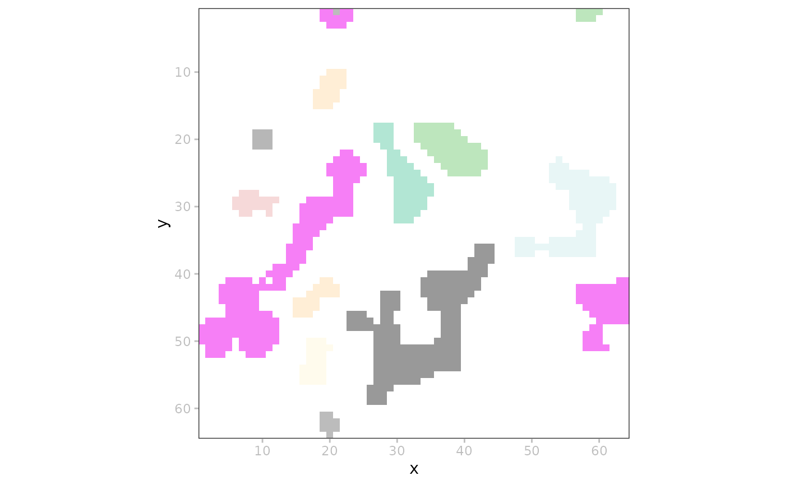
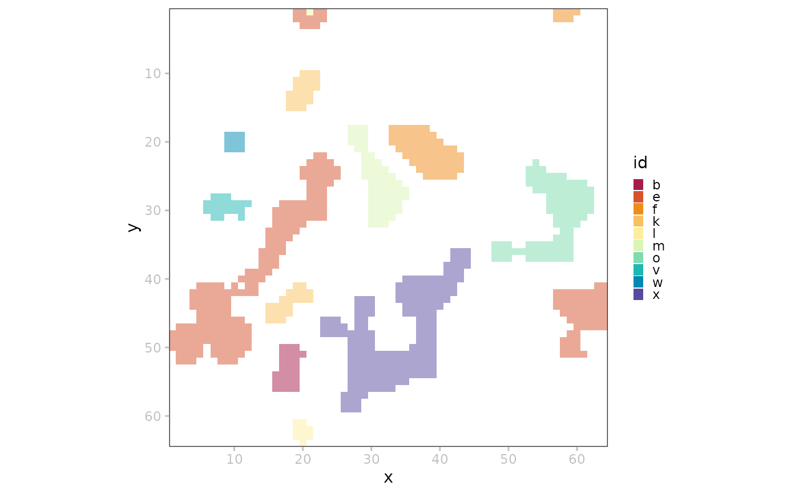
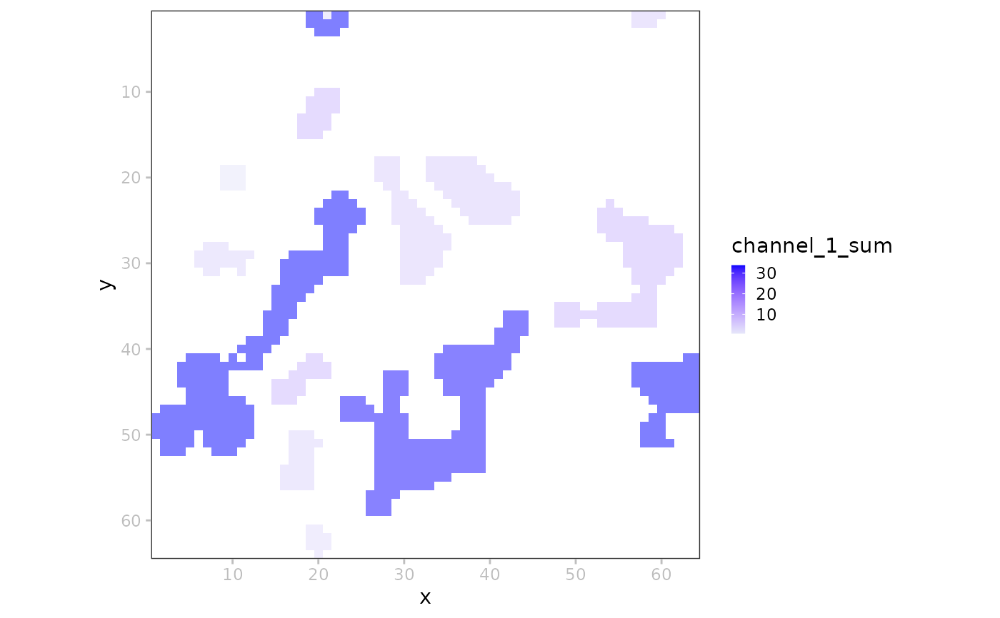

SpatialData label viz.
Usage
# S4 method for class 'SpatialData'
plotLabel(
x,
i = 1,
j = 1,
k = NULL,
c = NULL,
a = 0.5,
pal = NULL,
nan = NA,
assay = 1,
t = NULL,
z = NULL
)Arguments
- x
SpatialDataobject.- i
character string or index; the label element to plot.
- j
index or name of target coordinate system.
- k
index of the scale to render; by default (NULL), will auto-select scale in order to minimize memory-usage and blurring for a target size of 800 x 800px; use Inf to plot the lowest resolution available.
- c
determines label colors; the default (NULL), gives a binary image of whether or not a pixel is non-zero; alternatively, a character string specifying a
colDatacolumn or row name in an annotationtable.- a
scalar numeric in [0, 1]; alpha value passed to
geom_tile.- pal
character vector; color for discrete/continuous values (interpolated automatically when insufficient values are provided). When left unspecified, color will be sampled at random.
- nan
character string; color for missing values (hidden by default).
- assay
character string; in case of
cdenoting a row name, specifies whichassaydata to use (seegetTable).- t, z
integer scalar to indicate a specific time- or z-slice; if left unspecified (default NULL), will perform a max-projection.
Examples
x <- file.path("extdata", "blobs.zarr")
x <- system.file(x, package="spatialdataR")
x <- readSpatialData(x)
i <- "blobs_labels"
p <- plotSpatialData()
# simple binary image
p + plotLabel(x, i)

# mock up some extra data
t <- getTable(x, i)
t$id <- sample(letters, ncol(t))
table(x) <- t
# coloring by 'colData'
p + plotLabel(x, i, c="id")

# coloring by 'assay' data
p + plotLabel(x, i,
c="channel_1_sum",
pal=c("lavender", "blue"))
